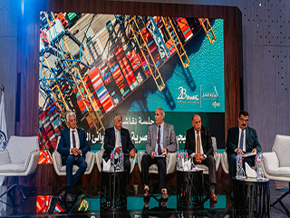

-

تقارير مجلس الادارة للشركات التابعة
تقارير مجلس الادارة للشركات التابعة عن العام المالى 2021/2022 …
-

وزير النقل بتفقد محطة تحيا مصر وسفينة وادي الملوك قبل الافتتاح الرئاسي
زار الفريق مهندس كامل الوزير وزير النقل صباح اليوم الثلاثاء، السفينة WADIALMOLOUK سفينة وادي الملوك التابعة لشركة الملاحة الوطنية إحدى شركات وزارة النقل والتي تم انضمامها لأسطول الشركة هذا العام.…
-

ميناء دمياط يتوجه بتكريم عدد من المتميزات من الكوادر النسائية بإدارات الهيئة
تزامناً مع اليوم الدولي للمرأة في القطاع البحري ميناء دمياط يتوجه بتكريم عدد من المتميزات من الكوادر النسائية بإدارات الهيئة …
-
.jpg)
الرئيس عبد الفتاح السيسي رئيس الجمهورية يعقد اجتماعًا مع رئيس مجلس الوزراء ووزير النقل
عقد السيد الرئيس عبد الفتاح السيسي اليوم اجتماعًا مع الدكتور مصطفى مدبولي، رئيس مجلس الوزراء ،والفريق كامل الوزير-وزير النقل.(نقلا عن صفحة قطاع النقل البحرى) …
-

رئيس الوزراء يتابع معدلات تنفيذ عدد من المشروعات الجاري تنفيذها بميناءي الإسكندرية والدخيلة ضمن خطة تنفيذ ميناء الإسكندرية الكبير
عقب انتهائه من تفقد عدد من المشروعات الخدمية بالمحافظة، توجه الدكتور مصطفى مدبولي، رئيس مجلس الوزراء؛ لمتابعة معدلات تنفيذ عدد من المشروعات الجاري تنفيذها بميناءي الإسكندرية والدخيلة، التي يتم تنفيذها ضمن خطة تنفيذ ميناء الإسكندرية الكبير وتطوير جميع الموانئ المصرية (نقلا عن صفحة وزارة النقل المصرية) …
-
 مؤتمر الأفضل لدعم التميز والإبداع في مجال النقل البحري برعاية السيد الفريق وزير النقل
نظم قطاع النقل البحري وبالتعاون مع شركة 2B Studios الاعلامية في مدينة العلمين الجديدة مؤتمر الأفضل في نسخته الأولى لدعم التميز، والإبداع، والابتكار في مجال النقل البحري. بحضور الدكتور اسماعيل عبد الغفار رئيس الأكاديمية العربية للعلوم والتكنولوجيا والنقل البحري وحضور القنصل الصيني والملحقين التجاريين السعودي والصيني، وبمشاركة عدد ك بير من قيادات النقل البحري والوكالات الملاحية والدعم اللوجيستي والجمارك والقطاع الخاص.(نقلا عن صفحة قطاع النقل البحرى) …